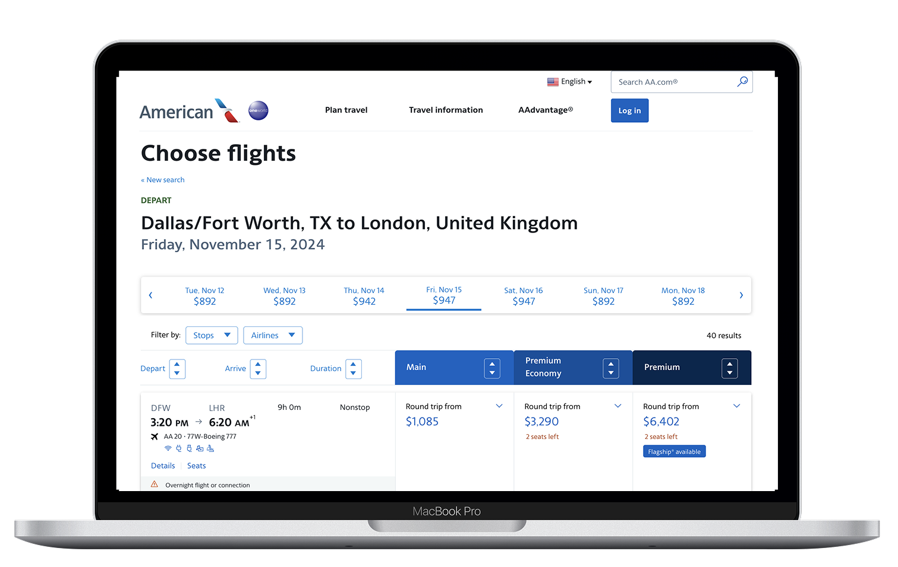
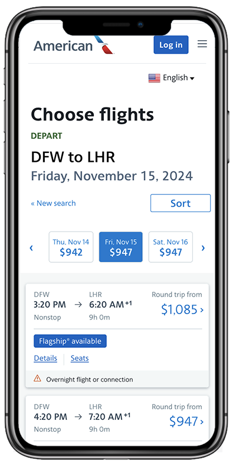
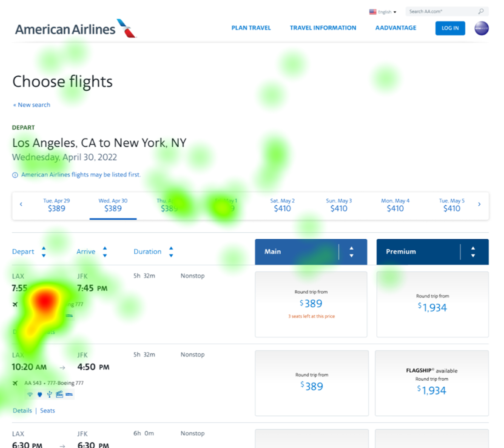
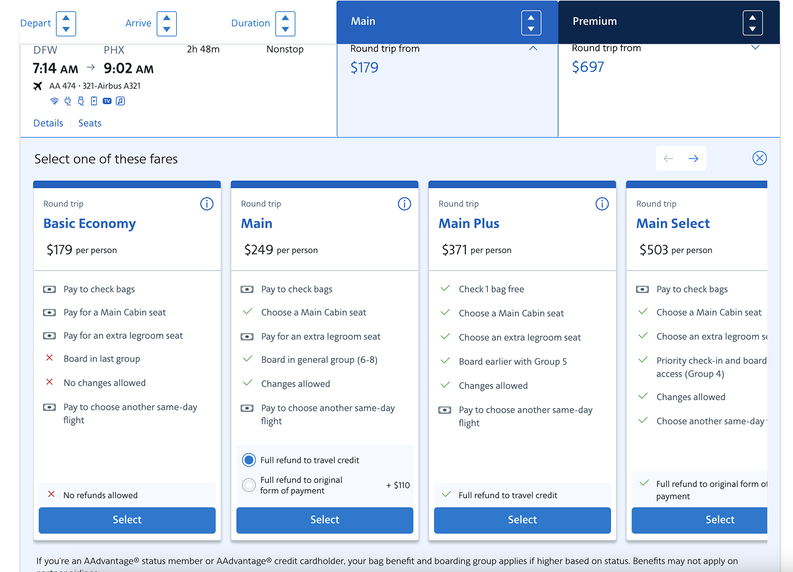
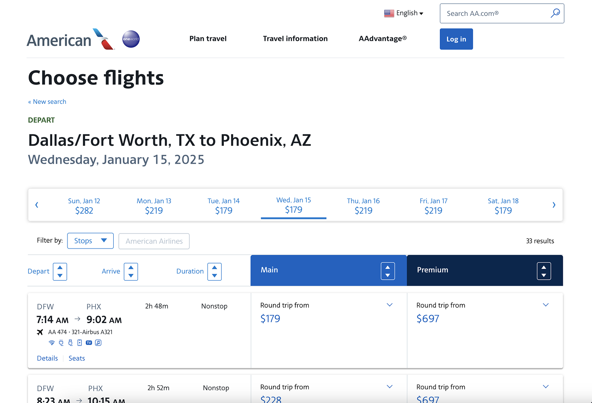

A redesign of American's $24.3 billion booking engine that added $111 million in incremental revenue.


Overview
In partnership with product and engineering teams, UX led a redesign of American's revenue engine, the booking experience, which drove approximately $24.3 billion in airline revenue at the time of the redesign. The booking path has continued to grow substantially since, remaining one of American's largest sources of revenue. The team combined customer research, data analysis and iterative design to reduce booking friction and increase customer confidence, proving how design decisions can directly influence business results at scale.
Objectives
Discover and Define
Discovery was directed in partnership with product and engineering, prioritizing which pain points to solve first based on both customer impact and revenue opportunity, not either alone. Research surfaced a clear customer confusion problem. Travelers didn't understand the differences between fare products, found the naming confusing and defaulted to picking by price alone rather than comparing what each fare included. I made the call to treat this as the primary design problem to solve, betting that clarity for the customer and incremental fare revenue for the business were the same underlying fix, not a trade-off between them. That decision shaped where the team spent its research and design time for the rest of the project.
Design and Deliver
Governance and process standards I built require design decisions to be validated with real behavioral data, not internal opinion, embedding practices like eye-tracking studies and in-person prototype testing into how the team works. That structure empowered the design team to test with real users at the airport, using interactive prototypes to get honest reactions before a single line of code was written. The investment in upfront testing reduced the risk of costly rework later, proof that the process paid for itself in engineering time saved downstream.



Outcomes
Direction set by Becky Sherman and delivered by the American Airlines UX, Product and Engineering teams under the design and research standards she established.
More results

Aileron design system

ECS communication system